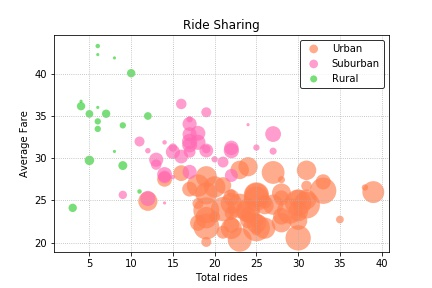
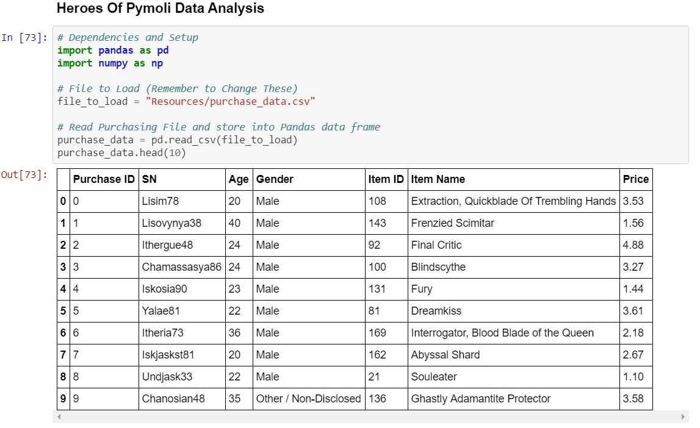

GitHub Portfolio
This page has links to the work I have done in data analytics. I have below diverse sampling of the projects I have done. Thank you for taking the time to review my work. . To see some of my web projects there on the nav bar under Project web dropdown.
- Plotly Heroku: visual app
- Peer-To-Peer Ridesharing Analysis : Github
- Heroes of Pymoli Analysis: GitHub
Plotly Heroku Github repo . I was tasked with creating an interactive dashboard to exploring belly button Biodiversity : Belly button Biodiversity data set. Data set was stored in db folder bellybutton.sqlite. I used a python flask app to display the information in json form created an interactive pie chart that changes based on the data

The car sharing analysis was done using two csv files from Lyft and Uber with data regarding their drivers and historic custmer data: including details in the form of city, driver count and individual fares. Readme.md has all information in the project Finished_pyber.ipynb is the file 
This game is free to play MMORPG game and players are encouraged to buy items within the game my task was to analyze data on sales by gender and player demographic by age.README.MD has all the information on the project. File: HeroesOfPYmoli.ipynb
- Weather Analysis : Weather API
A weather analysis on over 500+ cities from the world using ,OpenWeatherMap API Jupyter notebook, Matplotlib or Pandas plotting libraries. I convereted pots to images for display html/css for website some JavaScript.